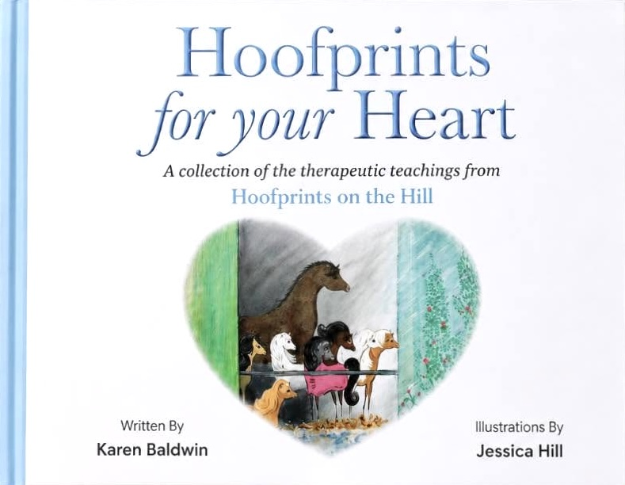

Hardback
A lasting hardback edition.
£12.50
A Companion to the Stories
A gentle and practical guide to emotional wellbeing, inspired by the teachings and life lessons from Hoofprints on the Hill.
Choose Your Edition
Hoofprints for your Heart brings together the key messages from the original stories, offering gentle guidance and encouragement for children, parents, caregivers, teachers, therapists and anyone looking for support with emotional wellbeing.
Inside the Guide
Explore a selection of pages, practical guidance and illustrations from Hoofprints for your Heart.
Select a page to view it full size.
Available In
A lasting hardback edition.
£12.50
A light, accessible paperback edition.
£10.00